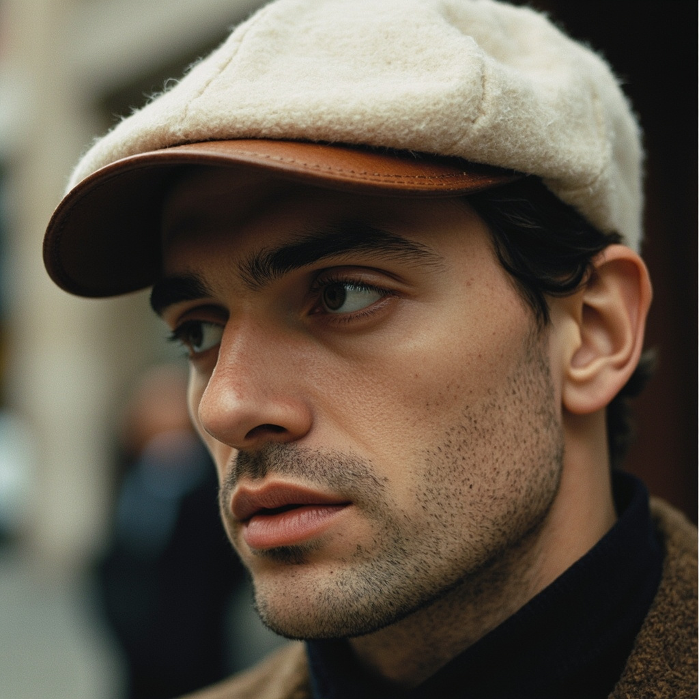

结构 A
6-Panel Classic

| 板数 | 6 |
| 帽舌 | 平胚 → 预压弧 |
| 闭合 | Hard Fitted（无扣） |
| Sweatband | 棉 + 防汗带 |
| 客单价 | $25-45 |
| 代表 | Knicks 59FIFTY |
适用：美式运动 / 联盟 IP / 街头
难度：⭐⭐⭐ 需联盟授权
TopOne 建议：可复制工艺，联盟 IP 难拿；可做"无名 59FIFTY"
难度：⭐⭐⭐ 需联盟授权
TopOne 建议：可复制工艺，联盟 IP 难拿；可做"无名 59FIFTY"